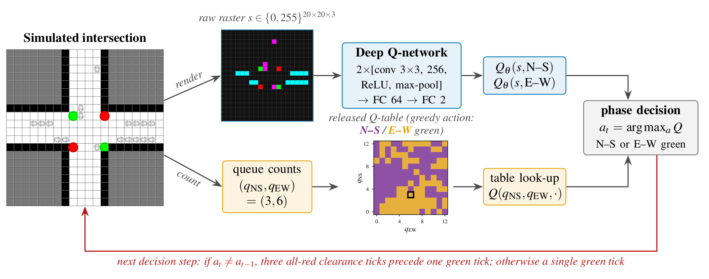

Preprint · 2026
Pixels or Queues? A Careful Evaluation of Deep and Tabular Reinforcement Learning for Traffic Signal Control
We compare a deep Q-network that reads raw 20×20 occupancy images with tabular Q-learning on queue counts for an isolated intersection, and re-evaluate both on 5,000 held-out episodes with classical baselines, demand sweeps and a delay measure that also counts the all-red clearance intervals.
BibTeX
@misc{karami2026pixels,
title = {Pixels or Queues? {A} Careful Evaluation of Deep and
Tabular Reinforcement Learning for Traffic Signal Control},
author = {Karami, Zahra and Zamanifar, Azadeh},
year = {2026},
note = {Preprint},
url = {https://zahrakrm.github.io/pixels-or-queues/}
}
Highlights
- Built a CNN-based DQN that sets signal phases from raw 20×20 occupancy images; on the original waiting-time metric it beat tabular Q-learning by 17.2% and fixed-time control by 44.9%.
- Ran a rigorous evaluation on 5,000 held-out episodes with strong baselines and seed-level statistics, showing that all-red clearance ticks hold 31–65% of delay and change the controller ranking.
- Interpreted the learned policies with saliency, occlusion and input ablations, and showed that a phase-aware, clearance-inclusive reward cuts switching by 71%; all results are fully reproducible.